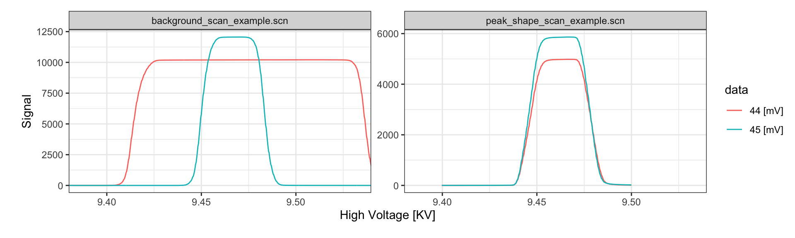
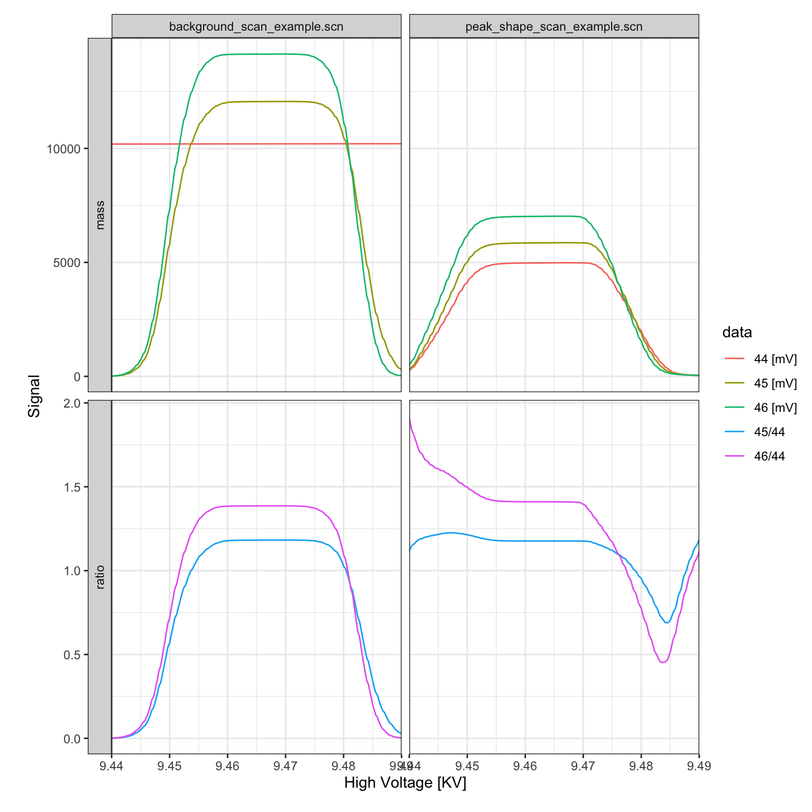

Introduction
Isoprocessor supports several plotting and data conversion functions for scan data. This vignette shows some of the functionality for scan files read by the isoreader package (see the corresponding vignette for details on data retrieval, storage and export).
Reading files
# read scan examples provided by the isoreader package
scan_files <-
iso_read_scan(
iso_get_reader_example("peak_shape_scan_example.scn"),
iso_get_reader_example("background_scan_example.scn"),
iso_get_reader_example("full_scan_example.scn"),
iso_get_reader_example("time_scan_example.scn")
)
#> Info: preparing to read 4 data files (all will be cached)...
#> Info: reading file 'peak_shape_scan_example.scn' with '.scn' reader
#> Info: reading file 'background_scan_example.scn' with '.scn' reader
#> Info: reading file 'full_scan_example.scn' with '.scn' reader
#> Info: reading file 'time_scan_example.scn' with '.scn' reader
#> Info: finished reading 4 files in 0.93 secsVisualization
Plotting the raw data can be done either with the generic iso_plot_raw_data() function for a simple plot with default parameters, or directly using the scan specific iso_plot_scan_data():
Customization
All customization options are described in the function help (?iso_plot_scan_data) and include, for example, plotting only a specific subset of masses:
# plot just masses 44 and 45
iso_plot_scan_data(
scan_files, type = "High Voltage",
data = c("44", "45")
)
Isotope ratios
Isoprocessor provides a dynamic ratio calculation function (iso_calculate_ratios()) that accepts any combination of masses, here demonstrated for several different ratios. In this context, another useful customization option of the plotting function is the option to adjust plot aesthetics such as color, shape, and paneling:
scan_files <-
scan_files %>%
# calculate 46/44, 45/44
iso_calculate_ratios(ratios = c("46/44", "45/44"))
#> Info: calculating ratio(s) in 4 data file(s): r46/44, r45/44
iso_plot_scan_data(
scan_files, type = "High Voltage",
# visualize masses and ratios
data = c(44:46, "45/44", "46/44"),
# focus on peak
x_interval = c(9.44, 9.49),
# panel including by category
panel = category ~ file_id
)
Signal conversion
Isoprocessor can convert between different signal units to examine the primary ion currents.
scan_files %>%
# convert all signals to nano ampere
iso_convert_signals(to = "pA") %>%
# plot primary ion currents
iso_plot_scan_data(data = c(44, 45))
#> Info: converting signals to 'pA' for 4 data file(s) with automatic resistor values from individual iso_files (if needed for conversion)
Plot styling
Since all isoprocessor plots are standard ggplot objects, they can be modified with any ggplot commands.
library(ggplot2)
# replot
iso_plot_scan_data(scan_files, type = "MagnetCurrent") +
# modify plot styling (ggplot functionality)
theme(text = element_text(size = 20))